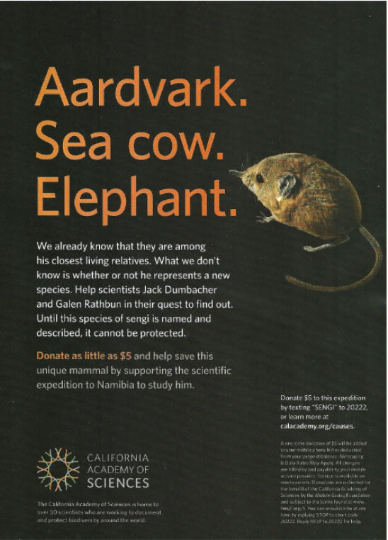
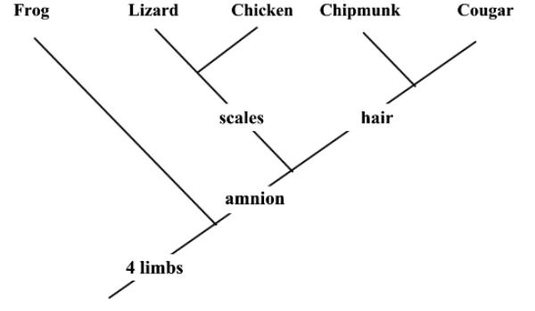
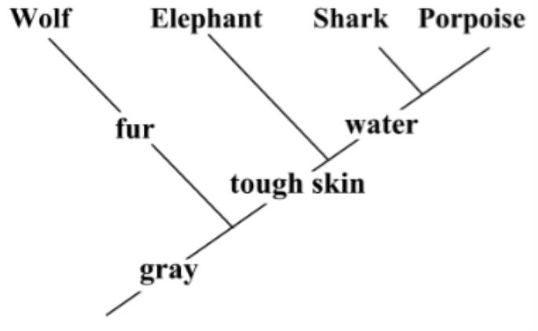
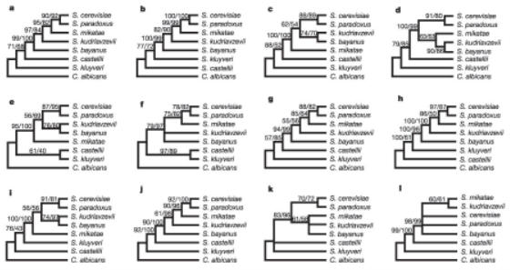

If this little mammal goes extinct, we won't ever be able to understand the evolution of our mammalian relatives. What a tragedy that would be!
If this little mammal goes extinct, we won't ever be able to understand the evolution of our mammalian relatives. What a tragedy that would be!| Feature Article - April 2010 |
| by Do-While Jones |
Cladistics can produce some really foolish relationships.
Traditionally, our April feature article is an April Fool parody to celebrate National Theory of Evolution Day (April 1). Last month, however, the California Academy of Sciences ran a full-page ad that is even sillier than any parody we could write. We swear to you that this ad is not an April Fool joke. It's real. Go to their web site and let them beg you for money! They need $10,000 by April 30. (They only had about $500 on April 2.)
|
 |
|---|
The sentence following the word "elephant" is, "We already know that they are among his closest living relatives." We can't think of anything more foolish than saying that the little sengi in the picture is more closely related to a sea cow or an elephant than it is to a mouse.
Here's why they ran such a foolish ad:
|
Academy scientists Galen Rathbun and Jack Dumbacher are working to document and describe a new species of sengi in Namibia. Initial DNA analysis from a markedly unique sengi suggests that it is genetically distinct from other sengis in the region. The pair of scientists must travel to Namibia and survey the desert habitat where the "mystery" sengi was first spotted to gather more information about the sengi. If, as the Academy scientists suspect, this sengi turns out to be a new species, it will be the smallest sengi known. It is also likely to be among the rarest. There are currently only 17 known species of sengi. The classification of a new species would significantly add to the biodiversity found in this unique group of mammals as well as provide a better understanding of the evolution of our distant mammalian relatives. The more we are able to understand about evolution and biodiversity, the better equipped we can be to protect and save our natural world. By describing and naming this new species, the scientists can begin the process of garnering protection for the animal. 1 |
We MUST send these scientists to Africa "to protect and save our natural world!" If this little mammal goes extinct, we won't ever be able to understand the evolution of our mammalian relatives. What a tragedy that would be!
How did these scientists become such fools? It's all because of a taxonomy based on cladistics.
The creationist Linnaeus originated the biological classification system (called "taxonomy" by scientists) used today. His goal was simply to group plants and animals in a logical way to make it easier to organize information about them in order to make it easier to study them. What he did was no different than a grocery store manager deciding how to stock the shelves to make it easy for shoppers to find what they need. But what is a logical grouping to one person might not be logical to another person. That's why you may find it hard to locate the items on your shopping list if you go to a different grocery store.
Classification is simply a matter of opinion. Linnaeus did a pretty good job, in most people's opinion; but not perfect. So, occasionally plants and animals have been reclassified by consensus of modern biologists.
The opinion of twentieth century biologists was that plants and animals are similar because of common ancestry. This evolutionary assumption has led to two problems. One problem is that it has led to circular reasoning. That is, plants and animals were classified on the basis of presumed ancestry. Then, the classification was used as proof that those plants and animals did have that presumed ancestry.
Another serious problem arose when geneticists got involved. Living things with the closest common ancestor should be the most genetically similar. Therefore, it seemed that the biological classification method could be made "more accurate" by using genetic comparisons rather than observable physical characteristics. This led to some foolish conclusions, such as a sengi being more closely related to a sea cow than a mouse. But let's not get ahead of ourselves. Let's continue methodically down the historical path that led to such a foolish conclusion.
Try to think like an evolutionist. You have no doubt that all life evolved from a common ancestor. Therefore, you are absolutely convinced that creatures that share a close common ancestor will be the most closely related on a genetic level. If a genetic analysis produces a surprising new relationship, then the previous classification must have been the result of human error. Some sort of bias, or incorrect logic, must have contaminated the previous results. The only solution is to replace unreliable human reasoning with the impartial analysis of a computer using well-defined rules. But there is a fatal flaw.
Most people think computers are objective and unbiased. You feed the data in, and get the results out, no matter what they are. The computer doesn't care about ramifications and lets the chips fall where they may. While it is true that the computer is unbiased, the computer programmer might not be.
In 1965, I was a member of a Boy Scout Explorer post sponsored by the local IBM office. There was a high school dance coming up. Some of us computer nerds had a great idea. The notion of computer dating was just beginning. So, we got all the boys and girls to fill out questionnaires and submitted the data to one of the IBM engineers to match us up. After the initial result, we suggested some changes. After two or three more tries, the computer came up with the "right" pairings. Remarkably, we were all paired with the prettiest girls. It was clear evidence (to us) that the computer got it right.
The computer really is unbiased; but the programmer isn't. The computer blindly follows the rules; but it is the programmer who makes the rules. Which chromosomes should be compared, and how should they be compared? It's the programmer's decision. If the programmer doesn't like the results, he makes different decisions and runs the program again.
The modern way to classify plants and animals is to use cladistics.
|
Cladistics: a system of biological taxonomy that defines taxa uniquely by shared characteristics not found in ancestral groups and uses inferred evolutionary relationships to arrange taxa in a branching hierarchy such that all members of a given taxon have the same ancestors 2 |
It is apparent from the definition that the process is based on the presumption of evolution. Naturally, it will produce a result consistent with evolution (or die trying).
The process appears to be completely objective--but it isn't.
Dr. Michael F. Whiting is a well-known (in biological circles) expert in insect evolution at Brigham Young University. 3
He gave a televised BYU Forum Address on May 24, 2005, in which he explained how cladistics works. Sixteen minutes into the lecture he produced this cladogram, and explained how he produced it.
|
 |
|---|
He started with the chicken, chipmunk, and cougar. Remember that the definition of cladistics included the phrase, "shared characteristics not found." Chipmunks and cougars have hair, but chickens don't share that characteristic. Therefore, they are more closely related to each other than they are to chickens.
Then he added the lizard. Lizards have scales. Although we generally think of chickens as having feathers, they do have scales on their feet. So, the lizard is closely related to the chicken.
Then he added the frog. The frog doesn't have hair or scales. Furthermore, their eggs don't have an amnion. But all have four limbs.
So, in his simple example, it all works out nicely, consistent with evolution. The chicken is closely related to the lizard because birds evolved from dinosaurs. It all looks so objective and clear. It seems like it should always work, no matter who does it or how you start. So, since it is April, let's try to do it, and make fools of ourselves.
|
 |
|---|
Let's start with shark, porpoise, and elephant. The shark and porpoise share the characteristic that they live in the water. The elephant doesn't. So, the shark and the porpoise are most closely related.
Now we add the wolf. It has fur, rather than tough leathery skin. But all four are gray. It is all very logical, but it must be wrong because it doesn't match the evolutionists' expectations. Whales and porpoises were supposed to have evolved from a land mammal, not a shark. Our foolish mistake was thinking that living in the water was more important than having mammary glands. And why was that a mistake? It was a mistake because it didn't agree with evolutionary theory. Of course, the evolutionary consensus might change. If evolutionists decide that it is more likely that mammary glands evolved twice (one on land, and once in the water), and whales and porpoises did not evolve from a land mammal, then we will be proved right after all.
Whiting's example used physical characteristics rather than genetic similarity. But it doesn't work any better at the genetic level.
|
One of the most pervasive challenges in molecular phylogenetics is the incongruence between phylogenies obtained using different data sets, such as individual genes. 4 |
Let's translate that into plain English. A "phylogeny" is a family tree. If you build a family tree comparing one particular gene, you will get a different family tree than if you used a different gene. Using different genes give "incongruent" (in other words, conflicting) results.
Why does this happen?
|
Analytical factors affecting phylogenetic reconstruction include the choice of optimality criterion, limited data availability, taxon sampling and specific assumptions in the modelling of sequence evolution. 5 |
In plain English, here are their four excuses why it doesn't always work. (In fact, it doesn't ever work, but they don't want to admit that.)
First, there is "the choice of optimality criterion." In other words, if you choose to compare the wrong thing (like living in water rather than having breasts) you will get the wrong answer.
Second, there is "limited data availability." This is a good general purpose excuse. "We weren't stupid--we just didn't have all the facts. We did the best we could with the limited information available to us."
Third, there is "taxon sampling." They can't compare everything, so they have to compare a few representative samples. "If the samples turn out not to be truly representative, it's not our fault."
Finally, "specific assumptions" regarding how evolution actually works. Remember, they are trying to prove what they already believe. If their assumption about how evolution happened is wrong (and it is), then their conclusion will be wrong. As if these four excuses weren't enough, they have another backup excuse.
|
Data sets composed of genes showing heterogeneity in mode of sequence evolution may also compound bias rather than resolve the true history. Furthermore, because current tests are not always reliable, it has been difficult to estimate incongruence. 6 |
If you are unlucky enough to pick genes that evolved differently (that is, they had a heterogeneous mode of sequence evolution), you will get the wrong answer.
Finally, they did admit that the method is "not always reliable." Actually, it is never reliable. Since they get so many incongruent (that is, contradictory) results, it is really hard to tell how bad the method really is.
They compared eight different kinds of yeasts using different genes and different rules, and came up with the 12 different, "robustly supported alternative" evolutionary relationships shown below. We realize that the printing may be too small for you to read; but that isn't important. The point is that the method gives 12 different results, depending upon which genes it compares, and what rules it uses to compare them.
|
 FIGURE 1. Single-gene data sets generate multiple, robustly supported alternative topologies. 7 |
|---|
We didn't have to search very hard to find an article with contradictory evolutionary relationships. The professional scientific literature is full of examples. In fact, that's the reason why Rokas and associates wrote the article. They were looking for a method of comparing genes that gives reasonable, consistent results. In their words,
|
To systematically investigate the degree of incongruence, and potential methods for resolving it, we screened the genome sequences of eight yeast species and selected 106 widely distributed orthologous genes for phylogenetic analyses, singly and by concatenation. 8 |
In other words, they wanted to find out how bad the method really is ("the degree of incongruence") and try to figure out a way to fix it. (Of course, they had to suggest a way to fix it. If they didn't, they would never have gotten their paper published.) So, they picked eight species of yeast to analyze.
We should point out that it is entirely possible, even likely, that these eight varieties of yeast might actually have a common ancestor. Microevolution does really happen. They are trying to prove that the method works for microevolution, and expand their conclusion to macroevolution (which is a fundamentally different thing that microevolution). Ironically, the process doesn't even work for the real process of microevolution, so there isn't any reason to believe it works for the mythical process of macroevolution. But, we are getting ahead of ourselves again.
Let's get back to their method. They selected 106 genes that they believed to be unrelated ("orthologous"). They tried to produce a family tree (a "phylogenetic analysis") using single genes. Then they tried using combinations of genes.
They eventually found that if they used enough genes, they got consistent results (for the genes they picked, and these particular species of yeast). Here is their official conclusion.
|
Implications for resolution of phylogenies Our results show that there is widespread incongruence between phylogenies recovered from individual genes. Therefore reliance on single or a small number of genes has a significant probability of supporting incorrect relationships for the eight yeast taxa. Perhaps surprisingly, none of the factors known or predicted to cause phylogenetic error could systematically account for the observed incongruence, suggesting that there may be no good predictor of the phylogenetic informativeness of genes. However, regardless of the source of incongruence, concatenation of a sufficient number of unlinked genes ( 20 genes in this study) yields the species tree with remarkable support. 9 |
In other words, using a single gene, or just a few genes, will almost certainly give the "wrong" answer. Furthermore, there is no way to tell, in advance, how to pick genes that will give the "right" answer.
Of course, they could not have gotten the paper published if their conclusion was, "We tried as hard as we could, but we couldn't solve the problem." Fortunately for them, they finally came up with "a species tree with remarkable support." The fact that it is "remarkable" to find a way to get the genetic data to agree with itself speaks volumes. Their solution was to average the heck out of the data, and rely on regression to the mean. That amounts to little more than ignoring all the differences.
If evolution were really true, then it should not matter much which genes are compared. But, as we recently showed you, the Y chromosomes of chimps and humans are radically different. 10 If the method gives different answers every time, it can't possibly give you "the one correct answer" because there are multiple different answers. But even if the method does give the same answer every time, it might be consistently wrong.
To see why averaging the data gives consistent results, and why consistency isn't proof of correctness, we have to go back to school.
Suppose you go to one of the small towns in western Nebraska. Suppose this town has only one school with a total of thirty students in grades 1 through 12. It is likely that some of these students have brothers and/or sisters in the school. In this part of the country children tend not to move far from parents, so it is likely some of the students have cousins in the school. As a scientist, it is your job to figure out which of the students are most closely related. You want to come up with a method that will tell you which students are siblings, which are cousins, and which aren't related at all.
First, you compare them using just a single characteristic. You look at each student's hair color and decide which students are most closely related based on hair color alone. Then you examine eye color and group the students, but you don't get the same results. So then you measure ear shape, and get yet a third, different result. You try again using nose shape, lip shape, teeth, complexion, and body mass index. Every time you get different results.
It is clear that using a single characteristic just won't tell you which students are related. So, you try using five characteristics in combination. You try hair color, eye color, ear shape, nose shape, and body mass index. Then you try hair color, eye color, ear shape, nose shape, and complexion. Success at last! Both combinations of five characteristics give almost identical results! Of course you get consistent results because the average of the four common characteristics outweighs the contribution of the one different characteristic.
If you average enough characteristics, you will get a consistent result. The method will consistently tell you that the same students are related to each other. But that doesn't mean those students really are related to each other. If you try the same method on a single class of unrelated students in a big city school, it will consistently pick out the siblings and cousins, even if none of them are closely related. Comparisons of individual genes (and individual proteins, for that matter) suggest different evolutionary relationships. Comparisons of large groups of genes suggest a consistent evolutionary relationship; but that consistency isn't significant--the consistency is simply a result of the law of averages.
We have seen that cladistics analysis of varieties of yeast give inconsistent results (unless you combine all the results together into a meaningless average). We encourage you to read the scientific literature and discover for yourself that this is a common occurrence. You will discover passages like this one.
|
Despite tremendous progress in recent years, phylogenetic reconstruction involves many challenges that create uncertainty with respect to the true historical associations of the taxa analysed. One of the most notable difficulties is the widespread occurrence of incongruence between alternative phylogenies generated from single-gene data sets. Incongruence occurs at all taxonomic levels, from phylogenies of closely related species to relationships between major classes or phyla and higher taxonomic groups. 11 |
You have probably seen multiple different suggested relationships between the supposed ape men ("hominids," in scientific terms). Ten years ago we showed you six different cladistic analyses of how our alleged human ancestors were related. 12 They are still trying to get the method to work.
|
Parsimony-based cladistic analyses are useful in deciphering relationships within the hominid family tree, despite their shortcomings. 13 |
This quote tells us more about wishful thinking than scientific reality. Cladistic analysis is useful if it supports the scientist's opinion. If it doesn't, it is because the method has shortcomings.
Despite the known shortcomings of cladistics analysis, some people will believe it no matter how foolish the conclusion. If a cladistics analysis says that a sengi is more closely related to an aardvark, sea cow, or elephant, than it is to a mouse, who can argue with that? IT'S SCIENCE! You can't argue with science, can you?
| Quick links to | |||
|---|---|---|---|
| Science Against Evolution Home Page |
Back issues of Disclosure (our newsletter) |
Web Site of the Month |
Topical Index |
Footnotes:
1
http://www.calacademy.org/join/causes/
2
http://www.merriam-webster.com/dictionary/cladistics
3
http://whitinglab.byu.edu/MFW.htm
4
Rokas et al., Nature, 23 October 2003, "Genome-scale approaches to resolving incongruence in molecular phylogenies", pp. 798 - 804
5
ibid.
6
ibid.
7
ibid.
8
ibid.
9
ibid.
10
Disclosure, February 2010, "Why, Oh Y?", http://www.scienceagainstevolution.org/v14i5n.htm
11
Rokas et al., Nature, 23 October 2003, "Genome-scale approaches to resolving incongruence in molecular phylogenies", pp. 798 - 804
12
Disclosure, January 2000, "Human Evolution", http://www.scienceagainstevolution.org/v4i4f.htm
13
White, Science, 2 October 2009, "Ardipithecus ramidus and the Paleobiology of Early Hominids", page 64